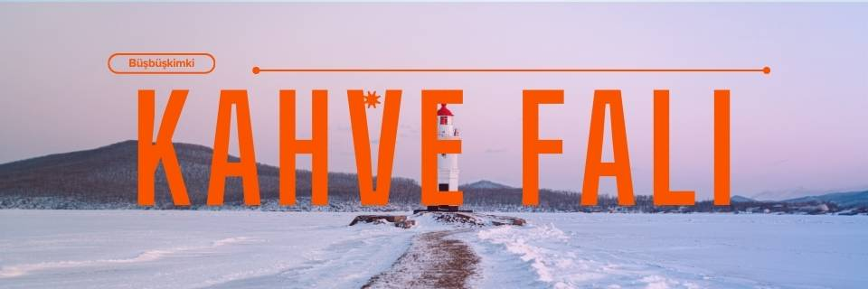
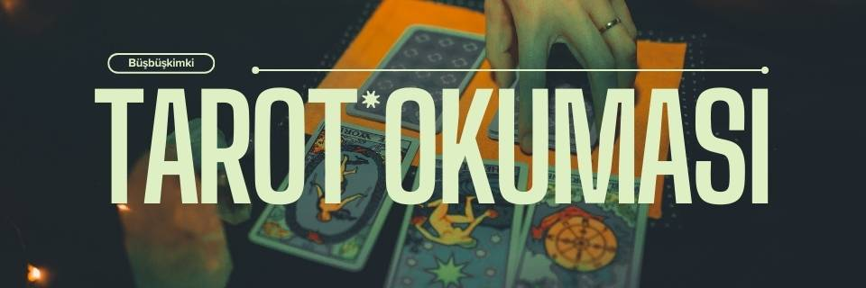
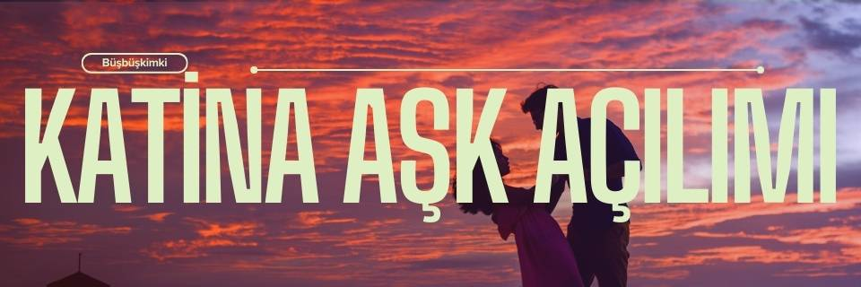
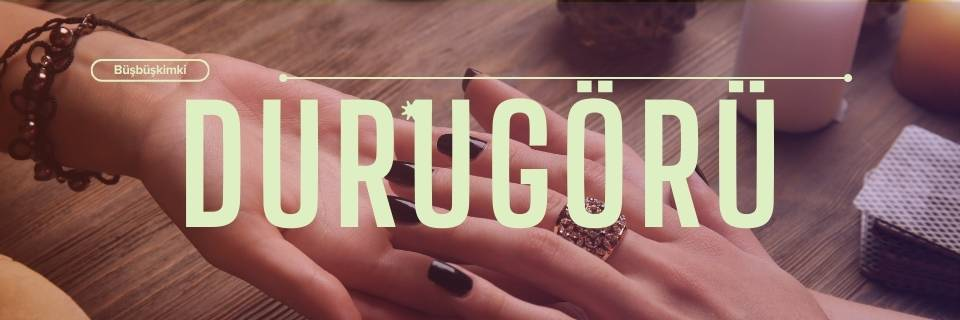
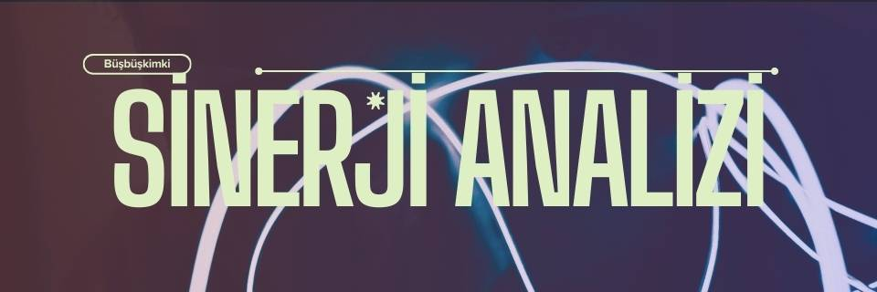
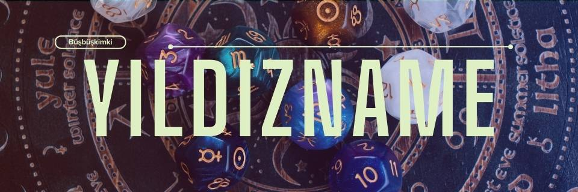
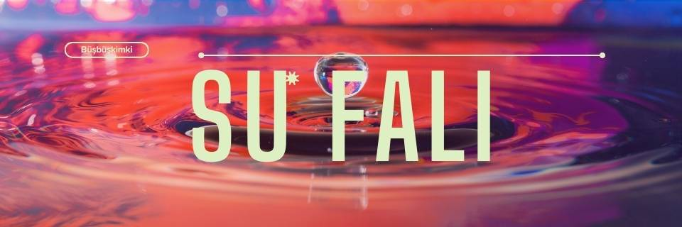
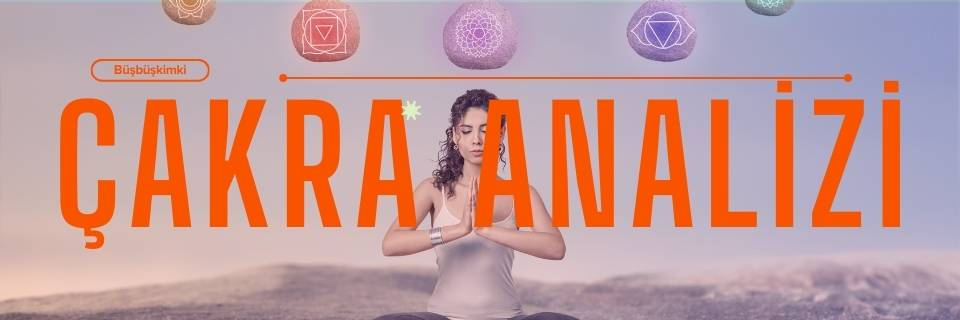
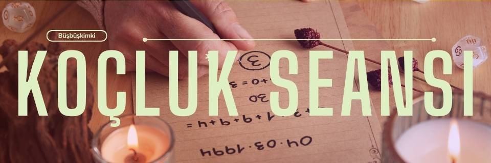

Numeroloji, JaaS, tarot, kahve falı, su falı gibi spiritüel danışmanlık hizmetleri sunuyorum.

Hayatımızın çeşitli yönlerine dair derin anlamlar taşıyan sembollerle dolu bir sanattır. Sadece bir fincan kahve içmek değil, aynı zamanda telvenin dibinde kalan şekillerle geleceğiniz hakkında ipuçları bulmaktır.
Her bir şekil, kendi hikayesini anlatan bir sembol olarak karşımıza çıkar. Örneğin, bir kalp şekli aşk ve ilişkilerde olumlu gelişmeleri işaret ederken, bir yol sembolü hayatınızda yeni başlangıçları simgeler.
Eğer siz de kahve falının gizemli dünyasında bir yolculuğa çıkmak ve telvenin size anlatacaklarını keşfetmek istiyorsanız, benimle iletişime geçebilirsiniz. Bir fincan kahve eşliğinde, geleceğinize dair ipuçlarını ve içsel dünyanızı birlikte keşfedelim.

Tarot kartları, geçmiş, şimdi ve gelecek arasında köprü kurarak hayat yolculuğunuzu anlamanıza yardımcı olur. Bu kartlar, ruhsal bilgelik ve içsel rehberlik sunar.

Katina kartları aşk ve ilişkilerle ilgili derin içgörüler sunar. Kalbinizin derinliklerindeki cevapları keşfetmek için Katina kartlarının bilgeliğiyle yol göstermek için buradayım.

Durugörü, ruhsal gözlerle görme yeteneğidir. Geleceğe dair belirsizlikleri ortadan kaldırarak, daha güvenli ve bilinçli bir şekilde ilerlemenize yardımcı olur.

Sinerji analizi ve numeroloji, aşk ve evlilik ilişkilerinizi daha derinlemesine anlamanızı ve yönlendirmenizi sağlar.

Yıldızname, gökyüzündeki yıldızların konumlarına ve hareketlerine dayanarak geleceği yorumlamayı amaçlayan bir yöntemdir.

Su falı, suyun yansımalarıyla hayatınızdaki belirsizlikleri aydınlatmak ve içsel rehberliği güçlendirmek için kullanılan bir yöntemdir.

Çakra analizi, bedeninizdeki enerji merkezlerini dengelemeye yönelik bir yöntemdir. Bu analiz, hangi çakralarınızın dengede olduğunu, hangilerinin enerjisel blokaj yaşadığını belirlemenize yardımcı olur.

Numeroloji ve koçluk seansları, hayatınızdaki belirsizlikleri aşmanıza yardımcı olur. Bu seanslar, kişisel gelişiminizi destekler ve yaşamınızdaki dengenizi bulmanızı sağlar.
Numeroloji, doğum tarihiniz ve isminiz üzerinden yaşamınızın haritasını çıkarır. Bu harita, kişisel ve profesyonel hedeflerinizi anlamanıza yardımcı olur.